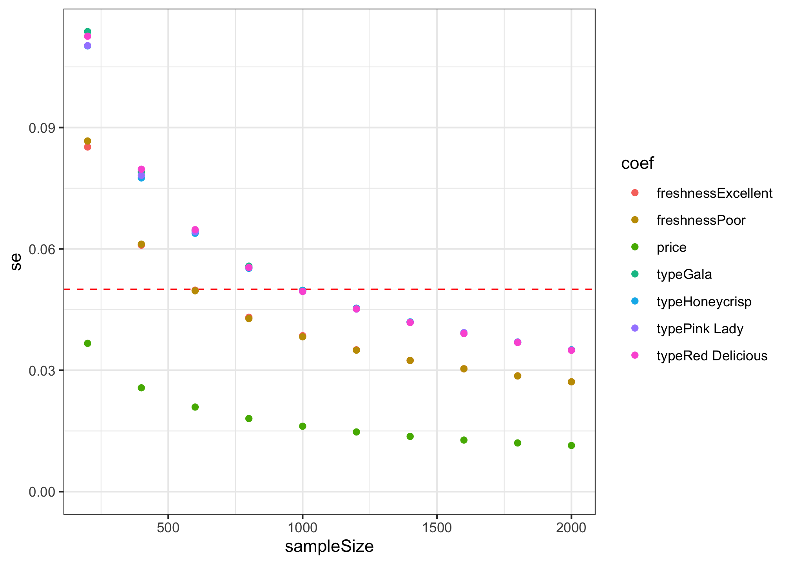

This package contains tools for designing surveys and conducting power analyses for choice based conjoint survey experiments in R.
Installation
The current version is not yet on CRAN, but you can install it from Github using the {remotes} library:
# install.packages("remotes")
remotes::install_github("jhelvy/conjointTools")Load the library with:
Make experiment designs
The first step in designing an experiment is to define the attributes and levels for your experiment. Many of the functions in {conjointTools} are more convenient to use if you define these as a separate object. For example, let’s say you’re designing a conjoint experiment about apples. You might have the following attributes and levels:
# Define the attributes and levels
levels <- list(
price = seq(1, 4, 0.5), # $ per pound
type = c('Fuji', 'Gala', 'Honeycrisp', 'Pink Lady', 'Red Delicious'),
freshness = c('Excellent', 'Average', 'Poor')
)With these levels defined, making the design of experiment is straightforward using the makeDoe() function:
doe <- makeDoe(levels)
head(doe)
#> price type freshness
#> 1 1 1 1
#> 2 2 1 1
#> 3 3 1 1
#> 4 4 1 1
#> 5 5 1 1
#> 6 6 1 1You can also make a fractional-factorial design based on different criteria. For example, to make a “D-optimal” design, add the type = "D" argument and specify the number of trials you want to use from the full factorial design (you can also use "A" and "I" to optimize for different efficiency measures):
doe <- makeDoe(levels, type = "D", nTrials = 50)
#> nTrials d balanced
#> 1 50 0.893 FALSEIf you’re unsure of how many trials to use, you can set search = TRUE to search across all feasible designs up to nTrials (with an optional minTrials argument as a starting number of trials in the search):
doe <- makeDoe(levels, type = "D", nTrials = 50, minTrials = 30, search = TRUE)
#> nTrials d balanced
#> 16 45 0.916 FALSE
#> 13 42 0.901 FALSE
#> 14 43 0.896 FALSE
#> 17 46 0.894 FALSE
#> 21 50 0.893 FALSE
#> 6 35 0.891 FALSE
#> 7 36 0.884 FALSE
#> 15 44 0.878 FALSE
#> 18 47 0.878 FALSE
#> 20 49 0.876 FALSE
#> 19 48 0.859 FALSE
#> 8 37 0.857 FALSE
#> 9 38 0.853 FALSE
#> 10 39 0.835 FALSE
#> 11 40 0.815 FALSE
#> 12 41 0.798 FALSE
#> 1 30 0.733 FALSE
#> 2 31 0.729 FALSE
#> 3 32 0.711 FALSE
#> 4 33 0.693 FALSE
#> 5 34 0.675 FALSEIf using search = TRUE, a summary of all designs will be printed to the console, and the design with the highest D-efficiency is returned.
You can also check the D-efficiency of any design using the evaluateDoe() function:
evaluateDoe(doe)
#> $d_eff
#> [1] 0.916
#>
#> $balanced
#> [1] FALSEOnce you’ve made your design, you can easily re-code it using the actual labels in your levels object using recodeDoe():
doe <- recodeDoe(doe, levels)
head(doe)
#> price type freshness
#> 1 2.0 Fuji Excellent
#> 2 2.5 Fuji Excellent
#> 3 3.5 Fuji Excellent
#> 4 3.0 Gala Excellent
#> 5 3.5 Gala Excellent
#> 6 4.0 Gala ExcellentYou should re-code your design prior to making a survey if you want to show the actual label values in the survey rather than just the attribute level numbers (e.g., 1, 2, 3, etc.).
Make conjoint surveys
A survey can be generated by randomly sampling from the design of experiment. The makeSurvey() function also eliminates the possibility of duplicate alternatives appearing in the same choice question:
survey <- makeSurvey(
doe = doe, # Design of experiment
nResp = 2000, # Total number of respondents (upper bound)
nAltsPerQ = 3, # Number of alternatives per question
nQPerResp = 6 # Number of questions per respondent
)
dim(survey)
#> [1] 36000 7
head(survey)
#> respID qID altID obsID price type freshness
#> 1 1 1 1 1 3.0 Gala Average
#> 2 1 1 2 1 2.0 Honeycrisp Poor
#> 3 1 1 3 1 3.5 Red Delicious Average
#> 4 1 2 1 2 1.5 Fuji Poor
#> 5 1 2 2 2 2.5 Red Delicious Excellent
#> 6 1 2 3 2 4.0 Honeycrisp AverageThe resulting data frame includes the following additional columns:
-
respID: Identifies each survey respondent. -
qID: Identifies the choice question answered by the respondent. -
altID:Identifies the alternative in any one choice observation. -
obsID: Identifies each unique choice observation across all respondents.
You can also make a “labeled” survey where the levels of one of the attributes is used as a label by setting the group argument to that attribute. This by definition sets the number of alternatives in each question to the number of levels in the chosen attribute. Here is an example labeled survey using the “freshness” attribute as the label:
survey_labeled <- makeSurvey(
doe = doe,
nResp = 2000,
nAltsPerQ = 3,
nQPerResp = 6,
group = "freshness"
)
dim(survey_labeled)
#> [1] 36000 7
head(survey_labeled)
#> respID qID altID obsID price type freshness
#> 1 1 1 1 1 2.5 Pink Lady Average
#> 2 1 1 2 1 4.0 Gala Excellent
#> 3 1 1 3 1 1.5 Red Delicious Poor
#> 4 1 2 1 2 4.0 Fuji Average
#> 5 1 2 2 2 2.5 Fuji Excellent
#> 6 1 2 3 2 3.0 Fuji PoorIn the above example, you can see in the first six rows of the survey that the freshness attribute is always fixed to be the same order, ensuring that each level in the freshness attribute will always be shown in each choice question.
Finally, you can also include an “Outside Good” (e.g., a “none” option) in your survey by setting outsideGood = TRUE. If included, all categorical attributes are dummy-coded to appropriately dummy-code the outside good alternative.
survey_og <- makeSurvey(
doe = doe,
nResp = 2000,
nAltsPerQ = 3,
nQPerResp = 6,
outsideGood = TRUE
)
dim(survey_og)
#> [1] 48000 14
head(survey_og)
#> respID qID altID obsID price type_Fuji type_Gala type_Honeycrisp
#> 1 1 1 1 1 2.5 0 0 0
#> 2 1 1 2 1 3.0 0 1 0
#> 3 1 1 3 1 3.0 0 1 0
#> 110000 1 1 4 1 0.0 0 0 0
#> 4 1 2 1 2 1.0 0 1 0
#> 5 1 2 2 2 2.5 0 0 0
#> type_Pink Lady type_Red Delicious freshness_Average freshness_Excellent
#> 1 0 1 1 0
#> 2 0 0 0 1
#> 3 0 0 1 0
#> 110000 0 0 0 0
#> 4 0 0 0 0
#> 5 1 0 1 0
#> freshness_Poor outsideGood
#> 1 0 0
#> 2 0 0
#> 3 0 0
#> 110000 0 1
#> 4 1 0
#> 5 0 0Simulate choices
You can simulate choices for a given survey using the simulateChoices() function. By default, random choices are simulated:
data <- simulateChoices(
survey = survey,
obsID = "obsID"
)
head(data)
#> respID qID altID obsID price type freshness choice
#> 1 1 1 1 1 3.0 Gala Average 1
#> 2 1 1 2 1 2.0 Honeycrisp Poor 0
#> 3 1 1 3 1 3.5 Red Delicious Average 0
#> 4 1 2 1 2 1.5 Fuji Poor 0
#> 5 1 2 2 2 2.5 Red Delicious Excellent 1
#> 6 1 2 3 2 4.0 Honeycrisp Average 0You can also pass a list of parameters to define a utility model that will be used to simulate choices. In the example below, the choices are simulated using a utility model with the following parameters:
- 1 continuous
priceparameter - 4 discrete parameters for
type - 2 discrete parameters for
freshness
data <- simulateChoices(
survey = survey,
obsID = "obsID",
pars = list(
price = 0.1,
type = c(0.1, 0.2, 0.3, 0.4),
freshness = c(0.1, -0.1))
)You can also simulate data with more complex models, such as mixed logit models where parameters follow a normal or log-normal distribution across the population, or interaction between parameters. In the example below, the choices are simulated using a utility model with the following parameters:
- 1 continuous “price” parameter
- 4 discrete parameters for “type”
- 2 random normal discrete parameters for “freshness”
- 2 interaction parameters between “price” and “freshness”
The randN() function is use to make the 2 freshness parameters follow a normal distribution with a specified mean (mu) and standard deviation (sigma).
Conduct a power analysis
The simulated choice data can be used to conduct a power analysis by estimating multiple models with different sample sizes. The estimateModels() function achieves this by partitioning the simulated choice data into multiple sizes (defined by the nbreaks argument) and then estimating a user-defined choice model on each data subset. In the example below, 10 different sample sizes are used to estimate 10 models.
models <- estimateModels(
nbreaks = 10,
data = data,
pars = c("price", "type", "freshness"),
outcome = "choice",
obsID = "obsID"
)The resulting models object is a list of estimated models, each estimated using the {logitr} package.
While the models object is a rather complex object in that it contains multiple models, helper functions can be used to extract information of interest. For example, the estimated coefficients and standard errors from each model can be extracted using the getModelResults() function:
results <- getModelResults(models)
head(results)
#> sampleSize coef est se
#> 1 200 price 0.06053738 0.03665858
#> 2 200 typeGala 0.04767441 0.11372197
#> 3 200 typeHoneycrisp 0.05519936 0.11017844
#> 4 200 typePink Lady 0.15511684 0.11024854
#> 5 200 typeRed Delicious 0.02942539 0.11257031
#> 6 200 freshnessExcellent 0.03273217 0.08519040Here is a summary of the standard errors for each sample size:
library(ggplot2)
ggplot(results) +
geom_hline(yintercept = 0.05, color = "red", linetype = 2) +
geom_point(aes(x = sampleSize, y = se, color = coef)) +
expand_limits(y = 0) +
theme_bw()
Citation Information
If you use this package for in a publication, I would greatly appreciate it if you cited it - you can get the citation by typing citation("conjointTools") into R:
citation("conjointTools")
#>
#> To cite conjointTools in publications use:
#>
#> John Paul Helveston (2021). conjointTools: Tools For Designing
#> Conjoint Survey Experiments.
#>
#> A BibTeX entry for LaTeX users is
#>
#> @Manual{,
#> title = {conjointTools: Tools For Designing Conjoint Survey Experiments},
#> author = {John Paul Helveston},
#> year = {2021},
#> note = {R package version 0.0.8},
#> url = {https://jhelvy.github.io/conjointTools/},
#> }